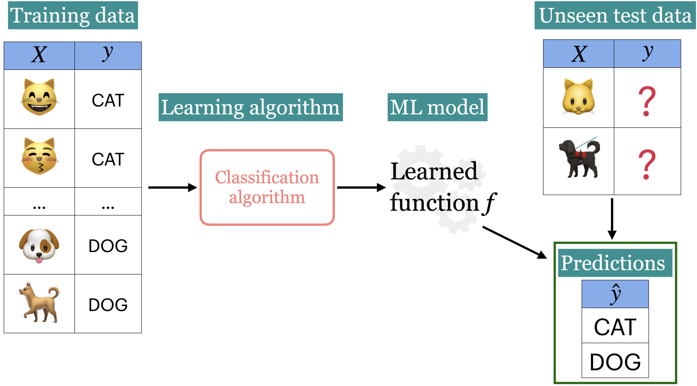
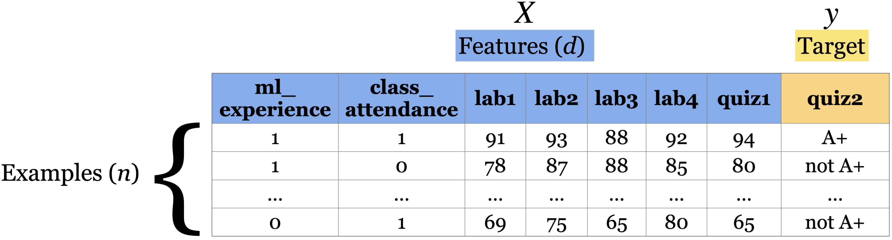
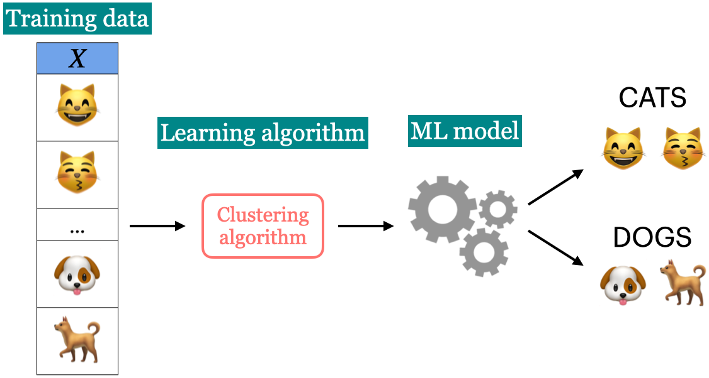
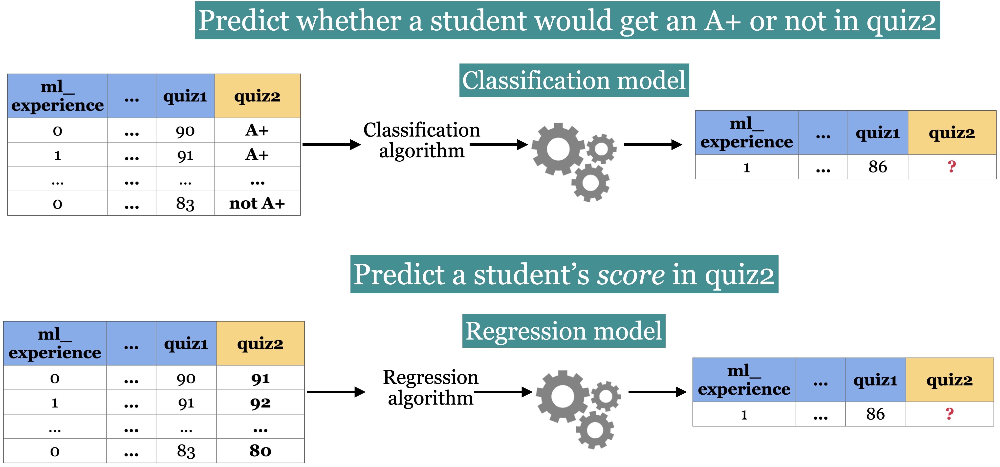
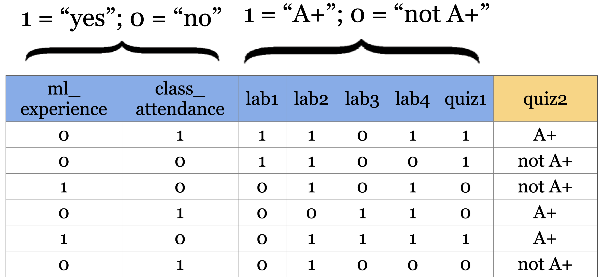

Lecture 2: Terminology, Baselines, Decision Trees¶
UBC 2021-22
Instructor: Varada Kolhatkar
Imports¶
import glob
import os
import re
import sys
from collections import Counter, defaultdict
import matplotlib.pyplot as plt
import numpy as np
import pandas as pd
sys.path.append("code/.")
import graphviz
import IPython
import mglearn
from IPython.display import HTML, display
from plotting_functions import *
from sklearn.dummy import DummyClassifier
from sklearn.feature_extraction.text import CountVectorizer
from sklearn.linear_model import LinearRegression, LogisticRegression
from sklearn.model_selection import train_test_split
from sklearn.pipeline import Pipeline, make_pipeline
from sklearn.tree import DecisionTreeClassifier, DecisionTreeRegressor, export_graphviz
from utils import *
plt.rcParams["font.size"] = 16
pd.set_option("display.max_colwidth", 200)
Announcements¶
Things due this week
Syllabus quiz: Sept 14, 11:59pm
Homework 1 (hw1): Sept 14, 11:59pm
Homework 2 (hw2) has been released (Due: Sept 20, 11:59pm)
You can find the tentative due dates for all deliverables here.
Please monitor Piazza (especially pinned posts and instructor posts) for announcements.
Sorry for the setup difficulties. That said, you are likely to go through this in future and figuring out these things on your own is a valuable skill.
Getting to know you survey¶
Your concerns¶
familiarity with Python
Sorry about this but we won’t be spending any time on teaching Python. We won’t be doing fancy stuff with Python in this course but if you struggled with hw1, it’s a sign that you are likely to struggle later in the course.
Workload and falling behind
We’ll try to do some practice exercises in class so that you can keep up with the material.
If you feel like we’re going too fast or too slow (unlikely), please feel free to reach out.
Summary of fun facts 😀¶
We have very interesting students in this class!! We have
poker, tennis, judo, basket ball, spikeball players
rock climbers, sky divers, swimmers, latte artists
saxophone, guitar players, tuba players
people who have podcasts, who have done musicals, who used to be a practicing veterinarian, who have aircraft pilot license, who are multilingual
people with diverse backgrounds: English literature, physiology, statistics, CS, biomedical engineering, mechanical engineering, …
coffee, cat, dog, tortoise, shopping lovers
some anti-fun people
…
Some of my favourite ones:
I’ve traveled to 50+ countries. ‼️‼️
I can sing the periodic element table song
Quick recap: True or False?¶
There are different types of machine learning.
Predicting spam and predicting housing prices are both examples of supervised machine learning.
For problems such as spelling correction, translation, face recognition, spam identification, if you are a domain expert, it’s usually faster and scalable to come up with a robust set of rules manually rather than building a machine learning model.
Google News is likely be using machine learning to organize news.
Learning outcomes¶
From this lecture, you will be able to
identify whether a given problem could be solved using supervised machine learning or not;
differentiate between supervised and unsupervised machine learning;
explain machine learning terminology such as features, targets, predictions, training, and error;
differentiate between classification and regression problems;
use
DummyClassifierandDummyRegressoras baselines for machine learning problems;explain the
fitandpredictparadigm and usescoremethod of ML models;broadly describe how decision tree prediction works;
use
DecisionTreeClassifierandDecisionTreeRegressorto build decision trees usingscikit-learn;visualize decision trees;
explain the difference between parameters and hyperparameters;
explain the concept of decision boundaries;
explain the relation between model complexity and decision boundaries.
Big picture and datasets¶
In this lecture, we’ll talk about our first machine learning model: Decision trees. We will also familiarize ourselves with some common terminology in supervised machine learning.
Toy datasets¶
Later in the course we will use larger datasets from Kaggle, for instance. But for our first couple of lectures, we will be working with the following three toy datasets:
Quiz2 grade prediction classification dataset
Quiz2 grade prediction regression dataset
Canada USA cities dataset
Note
If it’s not necessary for you to understand the code, I will put it in one of the files under the code directory to avoid clutter in this notebook. For example, most of the plotting code is going to be in code/plotting_functions.py.
Terminology [video]¶
You will see a lot of variable terminology in machine learning and statistics. Let’s familiarize ourselves with some of the basic terminology used in ML.
See also
Check out the accompanying video on this material.
I’ll be using the following grade prediction toy dataset to demonstrate the terminology. Imagine that you are taking a course with four home work assignments and two quizzes. You and your friends are quite nervous about your quiz2 grades and you want to know how will you do based on your previous performance and some other attributes. So you decide to collect some data from your friends from last year and train a supervised machine learning model for quiz2 grade prediction.
classification_df = pd.read_csv("data/quiz2-grade-toy-classification.csv")
print(classification_df.shape)
classification_df.head()
(21, 8)
| ml_experience | class_attendance | lab1 | lab2 | lab3 | lab4 | quiz1 | quiz2 | |
|---|---|---|---|---|---|---|---|---|
| 0 | 1 | 1 | 92 | 93 | 84 | 91 | 92 | A+ |
| 1 | 1 | 0 | 94 | 90 | 80 | 83 | 91 | not A+ |
| 2 | 0 | 0 | 78 | 85 | 83 | 80 | 80 | not A+ |
| 3 | 0 | 1 | 91 | 94 | 92 | 91 | 89 | A+ |
| 4 | 0 | 1 | 77 | 83 | 90 | 92 | 85 | A+ |
Recap: Supervised machine learning¶

Tabular data¶
In supervised machine learning, the input data is typically organized in a tabular format, where rows are examples and columns are features. One of the columns is typically the target.

- Features
Features are relevant characteristics of the problem, usually suggested by experts. Features are typically denoted by \(X\) and the number of features is usually denoted by \(d\).
- Target
Target is the feature we want to predict (typically denoted by \(y\)).
- Example
A row of feature values. When people refer to an example, it may or may not include the target corresponding to the feature values, depending upon the context. The number of examples is usually denoted by \(n\).
- Training
The process of learning the mapping between the features (\(X\)) and the target (\(y\)).
Example: Tabular data for grade prediction¶
The tabular data usually contains both: the features (X) and the target (y).
classification_df = pd.read_csv("data/quiz2-grade-toy-classification.csv")
classification_df.head()
| ml_experience | class_attendance | lab1 | lab2 | lab3 | lab4 | quiz1 | quiz2 | |
|---|---|---|---|---|---|---|---|---|
| 0 | 1 | 1 | 92 | 93 | 84 | 91 | 92 | A+ |
| 1 | 1 | 0 | 94 | 90 | 80 | 83 | 91 | not A+ |
| 2 | 0 | 0 | 78 | 85 | 83 | 80 | 80 | not A+ |
| 3 | 0 | 1 | 91 | 94 | 92 | 91 | 89 | A+ |
| 4 | 0 | 1 | 77 | 83 | 90 | 92 | 85 | A+ |
So the first step in training a supervised machine learning model is separating X and y.
X = classification_df.drop(columns=["quiz2"])
y = classification_df["quiz2"]
X.head()
| ml_experience | class_attendance | lab1 | lab2 | lab3 | lab4 | quiz1 | |
|---|---|---|---|---|---|---|---|
| 0 | 1 | 1 | 92 | 93 | 84 | 91 | 92 |
| 1 | 1 | 0 | 94 | 90 | 80 | 83 | 91 |
| 2 | 0 | 0 | 78 | 85 | 83 | 80 | 80 |
| 3 | 0 | 1 | 91 | 94 | 92 | 91 | 89 |
| 4 | 0 | 1 | 77 | 83 | 90 | 92 | 85 |
y.head()
0 A+
1 not A+
2 not A+
3 A+
4 A+
Name: quiz2, dtype: object
Example: Tabular data for the housing price prediction¶
Here is an example of tabular data for housing price prediction. You can download the data from here.
housing_df = pd.read_csv("data/kc_house_data.csv")
housing_df.drop(["id", "date"], axis=1, inplace=True)
HTML(housing_df.head().to_html(index=False))
| price | bedrooms | bathrooms | sqft_living | sqft_lot | floors | waterfront | view | condition | grade | sqft_above | sqft_basement | yr_built | yr_renovated | zipcode | lat | long | sqft_living15 | sqft_lot15 |
|---|---|---|---|---|---|---|---|---|---|---|---|---|---|---|---|---|---|---|
| 221900.0 | 3 | 1.00 | 1180 | 5650 | 1.0 | 0 | 0 | 3 | 7 | 1180.0 | 0 | 1955 | 0 | 98178 | 47.5112 | -122.257 | 1340 | 5650 |
| 538000.0 | 3 | 2.25 | 2570 | 7242 | 2.0 | 0 | 0 | 3 | 7 | 2170.0 | 400 | 1951 | 1991 | 98125 | 47.7210 | -122.319 | 1690 | 7639 |
| 180000.0 | 2 | 1.00 | 770 | 10000 | 1.0 | 0 | 0 | 3 | 6 | 770.0 | 0 | 1933 | 0 | 98028 | 47.7379 | -122.233 | 2720 | 8062 |
| 604000.0 | 4 | 3.00 | 1960 | 5000 | 1.0 | 0 | 0 | 5 | 7 | 1050.0 | 910 | 1965 | 0 | 98136 | 47.5208 | -122.393 | 1360 | 5000 |
| 510000.0 | 3 | 2.00 | 1680 | 8080 | 1.0 | 0 | 0 | 3 | 8 | 1680.0 | 0 | 1987 | 0 | 98074 | 47.6168 | -122.045 | 1800 | 7503 |
X = housing_df.drop(columns=["price"])
y = housing_df["price"]
X.head()
| bedrooms | bathrooms | sqft_living | sqft_lot | floors | waterfront | view | condition | grade | sqft_above | sqft_basement | yr_built | yr_renovated | zipcode | lat | long | sqft_living15 | sqft_lot15 | |
|---|---|---|---|---|---|---|---|---|---|---|---|---|---|---|---|---|---|---|
| 0 | 3 | 1.00 | 1180 | 5650 | 1.0 | 0 | 0 | 3 | 7 | 1180.0 | 0 | 1955 | 0 | 98178 | 47.5112 | -122.257 | 1340 | 5650 |
| 1 | 3 | 2.25 | 2570 | 7242 | 2.0 | 0 | 0 | 3 | 7 | 2170.0 | 400 | 1951 | 1991 | 98125 | 47.7210 | -122.319 | 1690 | 7639 |
| 2 | 2 | 1.00 | 770 | 10000 | 1.0 | 0 | 0 | 3 | 6 | 770.0 | 0 | 1933 | 0 | 98028 | 47.7379 | -122.233 | 2720 | 8062 |
| 3 | 4 | 3.00 | 1960 | 5000 | 1.0 | 0 | 0 | 5 | 7 | 1050.0 | 910 | 1965 | 0 | 98136 | 47.5208 | -122.393 | 1360 | 5000 |
| 4 | 3 | 2.00 | 1680 | 8080 | 1.0 | 0 | 0 | 3 | 8 | 1680.0 | 0 | 1987 | 0 | 98074 | 47.6168 | -122.045 | 1800 | 7503 |
y.head()
0 221900.0
1 538000.0
2 180000.0
3 604000.0
4 510000.0
Name: price, dtype: float64
X.shape
(21613, 18)
Attention
To a machine, column names (features) have no meaning. Only feature values and how they vary across examples mean something.
Alternative terminology for examples, features, targets, and training¶
examples = rows = samples = records = instances
features = inputs = predictors = explanatory variables = regressors = independent variables = covariates
targets = outputs = outcomes = response variable = dependent variable = labels (if categorical).
training = learning = fitting
See also
Check out the MDS terminology document.
Supervised learning vs. Unsupervised learning¶
In supervised learning, training data comprises a set of features (\(X\)) and their corresponding targets (\(y\)). We wish to find a model function \(f\) that relates \(X\) to \(y\). Then use that model function to predict the targets of new examples.
In unsupervised learning training data consists of observations (\(X\)) without any corresponding targets. Unsupervised learning could be used to group similar things together in \(X\) or to provide concise summary of the data. We’ll learn more about this topic in later videos.

Supervised machine learning is about function approximation, i.e., finding the mapping function between X and y whereas unsupervised machine learning is about concisely describing the data.
Classification vs. Regression¶
In supervised machine learning, there are two main kinds of learning problems based on what they are trying to predict.
Classification problem: predicting among two or more discrete classes
Example1: Predict whether a patient has a liver disease or not
Example2: Predict whether a student would get an A+ or not in quiz2.
Regression problem: predicting a continuous value
Example1: Predict housing prices
Example2: Predict a student’s score in quiz2.

# quiz2 classification toy data
classification_df = pd.read_csv("data/quiz2-grade-toy-classification.csv")
classification_df.head(4)
| ml_experience | class_attendance | lab1 | lab2 | lab3 | lab4 | quiz1 | quiz2 | |
|---|---|---|---|---|---|---|---|---|
| 0 | 1 | 1 | 92 | 93 | 84 | 91 | 92 | A+ |
| 1 | 1 | 0 | 94 | 90 | 80 | 83 | 91 | not A+ |
| 2 | 0 | 0 | 78 | 85 | 83 | 80 | 80 | not A+ |
| 3 | 0 | 1 | 91 | 94 | 92 | 91 | 89 | A+ |
# quiz2 regression toy data
regression_df = pd.read_csv("data/quiz2-grade-toy-regression.csv")
regression_df.head(4)
| ml_experience | class_attendance | lab1 | lab2 | lab3 | lab4 | quiz1 | quiz2 | |
|---|---|---|---|---|---|---|---|---|
| 0 | 1 | 1 | 92 | 93 | 84 | 91 | 92 | 90 |
| 1 | 1 | 0 | 94 | 90 | 80 | 83 | 91 | 84 |
| 2 | 0 | 0 | 78 | 85 | 83 | 80 | 80 | 82 |
| 3 | 0 | 1 | 91 | 94 | 92 | 91 | 89 | 92 |
❓❓ Questions for you¶
Exercise 2.1: \(X\) and \(y\)
How many examples and features are there in the housing price data above? You can use
df.shapeto get number of rows and columns in a dataframe.For each of the following examples what would be the relevant features and what would be the target?
Sentiment analysis
Fraud detection
Face recognition
Exercise 2.1: V’s Solutions!
Number of examples: 21613, number of features: 18
Open-ended
Exercise 2.2: Supervised vs. unsupervised
Which of these are examples of supervised learning?
Finding groups of similar properties in a real estate data set.
Predicting real estate prices based on house features like number of rooms, learning from past sales as examples.
Grouping articles on different topics from different news sources (something like the Google News app).
Detecting credit card fraud based on examples of fraudulent and non-fraudulent transactions.
Exercise 2.2: V’s Solutions!
2 and 4 are examples of supervised machine learning
Exercise 2.3: Classification vs. Regression
Which of these are examples of classification and which ones are of regression?
Predicting the price of a house based on features such as number of bedrooms and the year built.
Predicting if a house will sell or not based on features like the price of the house, number of rooms, etc.
Predicting percentage grade in CPSC 330 based on past grades.
Predicting whether you should bicycle tomorrow or not based on the weather forecast.
Exercise 2.3: V’s Solutions!
classification: 2, 4
regression: 1, 3
Baselines [video]¶
See also
Check out the accompanying video on this material.
Supervised learning (Reminder)¶
Training data \(\rightarrow\) Machine learning algorithm \(\rightarrow\) ML model
Unseen test data + ML model \(\rightarrow\) predictions
Let’s build a very simple supervised machine learning model for quiz2 grade prediction problem.
classification_df = pd.read_csv("data/quiz2-grade-toy-classification.csv")
classification_df.head()
| ml_experience | class_attendance | lab1 | lab2 | lab3 | lab4 | quiz1 | quiz2 | |
|---|---|---|---|---|---|---|---|---|
| 0 | 1 | 1 | 92 | 93 | 84 | 91 | 92 | A+ |
| 1 | 1 | 0 | 94 | 90 | 80 | 83 | 91 | not A+ |
| 2 | 0 | 0 | 78 | 85 | 83 | 80 | 80 | not A+ |
| 3 | 0 | 1 | 91 | 94 | 92 | 91 | 89 | A+ |
| 4 | 0 | 1 | 77 | 83 | 90 | 92 | 85 | A+ |
classification_df['quiz2'].value_counts()
not A+ 11
A+ 10
Name: quiz2, dtype: int64
Seems like “not A+” occurs more frequently than “A+”. What if we predict “not A+” all the time?
Baselines¶
- Baseline
A simple machine learning algorithm based on simple rules of thumb.
For example, most frequent baseline always predicts the most frequent label in the training set.
Baselines provide a way to sanity check your machine learning model.
DummyClassifier¶
sklearn’s baseline model for classificationLet’s train
DummyClassifieron the grade prediction dataset.
Steps to train a classifier using sklearn¶
Read the data
Create \(X\) and \(y\)
Create a classifier object
fitthe classifierpredicton new examplesscorethe model
Reading the data¶
classification_df.head()
| ml_experience | class_attendance | lab1 | lab2 | lab3 | lab4 | quiz1 | quiz2 | |
|---|---|---|---|---|---|---|---|---|
| 0 | 1 | 1 | 92 | 93 | 84 | 91 | 92 | A+ |
| 1 | 1 | 0 | 94 | 90 | 80 | 83 | 91 | not A+ |
| 2 | 0 | 0 | 78 | 85 | 83 | 80 | 80 | not A+ |
| 3 | 0 | 1 | 91 | 94 | 92 | 91 | 89 | A+ |
| 4 | 0 | 1 | 77 | 83 | 90 | 92 | 85 | A+ |
Create \(X\) and \(y\)¶
\(X\) → Feature vectors
\(y\) → Target
X = classification_df.drop(columns=["quiz2"])
y = classification_df["quiz2"]
Create a classifier object¶
importthe appropriate classifierCreate an object of the classifier
from sklearn.dummy import DummyClassifier # import the classifier
dummy_clf = DummyClassifier(strategy="most_frequent") # Create a classifier object
fit the classifier¶
The “learning” is carried out when we call
fiton the classifier object.
dummy_clf.fit(X, y); # fit the classifier
predict the target of given examples¶
We can predict the target of examples by calling
predicton the classifier object.
dummy_clf.predict(X) # predict using the trained classifier
array(['not A+', 'not A+', 'not A+', 'not A+', 'not A+', 'not A+',
'not A+', 'not A+', 'not A+', 'not A+', 'not A+', 'not A+',
'not A+', 'not A+', 'not A+', 'not A+', 'not A+', 'not A+',
'not A+', 'not A+', 'not A+'], dtype='<U6')
score your model¶
How do you know how well your model is doing?
For classification problems, by default,
scoregives the accuracy of the model, i.e., proportion of correctly predicted targets.\(accuracy = \frac{\text{correct predictions}}{\text{total examples}}\)
print("The accuracy of the model on the training data: %0.3f" % (dummy_clf.score(X, y)))
The accuracy of the model on the training data: 0.524
Sometimes you will also see people reporting error, which is usually \(1 - accuracy\)
scorecalls
predictonXcompares predictions with
y(true targets)returns the accuracy in case of classification.
print(
"The error of the model on the training data: %0.3f" % (1 - dummy_clf.score(X, y))
)
The error of the model on the training data: 0.476
fit, predict , and score summary¶
Here is the general pattern when we build ML models using sklearn.
# Create `X` and `y` from the given data
X = classification_df.drop(columns=["quiz2"])
y = classification_df["quiz2"]
clf = DummyClassifier(strategy="most_frequent") # Create a class object
clf.fit(X, y) # Train/fit the model
print(clf.score(X, y)) # Assess the model
new_examples = [[0, 1, 92, 90, 95, 93, 92], [1, 1, 92, 93, 94, 92]]
clf.predict(new_examples) # Predict on some new data using the trained model
0.5238095238095238
array(['not A+', 'not A+'], dtype='<U6')
Note
You’ll be exploring dummy classifier in your lab!
DummyRegressor¶
You can also do the same thing for regression problems using DummyRegressor, which predicts mean, median, or constant value of the training set for all examples.
Let’s build a regression baseline model using
sklearn.
from sklearn.dummy import DummyRegressor
regression_df = pd.read_csv("data/quiz2-grade-toy-regression.csv") # Read data
X = regression_df.drop(columns=["quiz2"]) # Create `X` and `y` from the given data
y = regression_df["quiz2"]
reg = DummyRegressor() # Create a class object
reg.fit(X, y) # Train/fit the model
reg.score(X, y) # Assess the model
new_examples = [[0, 1, 92, 90, 95, 93, 92], [1, 1, 92, 93, 94, 92]]
reg.predict(new_examples) # Predict on some new data using the trained model
array([86.28571429, 86.28571429])
The
fitandpredictparadigms similar to classification. Thescoremethod in the context of regression returns somethings called \(R^2\) score. (More on this in later videos.)The maximum \(R^2\) is 1 for perfect predictions.
For
DummyRegressorit returns the mean of theyvalues.
reg.score(X, y)
0.0
❓❓ Questions for you¶
Exercise 2.4
Order the steps below to build ML models using
sklearn.scoreto evaluate the performance of a given modelpredicton new examplesCreating a model instance
Creating
Xandyfit
predicttakes onlyXas argument whereasfitandscoretake bothXandyas arguments. True or False.Have you ever played 20-questions game? If yes, think about how do you decide what question to ask next?
Exercise 2.4: V’s Solutions!
Ordered steps
Creating
XandyCreating a model instance
fitscoreto evaluate the performance of a given modelpredicton new examples
True
Open-ended.
Decision trees [video]¶
See also
Check out the accompanying video on this material.
Writing a traditional program to predict quiz2 grade¶
Can we do better than the baseline?
Forget about ML for a second. If you are asked to write a program to predict whether a student gets an A+ or not in quiz2, how would you go for it?
For simplicity, let’s binarize the feature values.

Is there a pattern that distinguishes yes’s from no’s and what does the pattern say about today?
How about a rule-based algorithm with a number of if else statements?
if class_attendance == 1 and quiz1 == 1: quiz2 == "A+" elif class_attendance == 1 and lab3 == 1 and lab4 == 1: quiz2 == "A+" ...
How many possible rule combinations there could be with the given 7 binary features?
Gets unwieldy pretty quickly
Decision tree algorithm¶
A machine learning algorithm to derive such rules from data in a principled way.
Have you ever played 20-questions game? Decision trees are based on the same idea!
Let’s
fita decision tree usingscikit-learnandpredictwith it.Recall that
scikit-learnuses the termfitfor training or learning and usespredictfor prediction.
Building decision trees with sklearn¶
Let’s binarize our toy dataset for simplicity.
classification_df = pd.read_csv("data/quiz2-grade-toy-classification.csv")
X = classification_df.drop(columns=["quiz2"])
y = classification_df["quiz2"]
X_binary = X.copy()
columns = ["lab1", "lab2", "lab3", "lab4", "quiz1"]
for col in columns:
X_binary[col] = X_binary[col].apply(lambda x: 1 if x >= 90 else 0)
X_binary.head()
| ml_experience | class_attendance | lab1 | lab2 | lab3 | lab4 | quiz1 | |
|---|---|---|---|---|---|---|---|
| 0 | 1 | 1 | 1 | 1 | 0 | 1 | 1 |
| 1 | 1 | 0 | 1 | 1 | 0 | 0 | 1 |
| 2 | 0 | 0 | 0 | 0 | 0 | 0 | 0 |
| 3 | 0 | 1 | 1 | 1 | 1 | 1 | 0 |
| 4 | 0 | 1 | 0 | 0 | 1 | 1 | 0 |
y.head()
0 A+
1 not A+
2 not A+
3 A+
4 A+
Name: quiz2, dtype: object
DummyClassifier on quiz2 grade prediction toy dataset¶
dummy_clf = DummyClassifier(strategy="most_frequent")
dummy_clf.fit(X_binary, y)
dummy_clf.score(X_binary, y)
0.5238095238095238
DecisionTreeClassifier on quiz2 grade prediction toy dataset¶
from sklearn.tree import DecisionTreeClassifier
model = DecisionTreeClassifier() # Create a decision tree
model.fit(X_binary, y) # Fit a decision tree
model.score(X_binary, y) # Assess the model
0.9047619047619048
The decision tree classifier is giving much higher accuracy than the dummy classifier. That’s good news!
display_tree(X_binary.columns, model) # model visualization
How does predict work?¶
new_example = np.array([[0, 1, 0, 0, 1, 1, 1]])
pd.DataFrame(data=new_example, columns=X.columns)
| ml_experience | class_attendance | lab1 | lab2 | lab3 | lab4 | quiz1 | |
|---|---|---|---|---|---|---|---|
| 0 | 0 | 1 | 0 | 0 | 1 | 1 | 1 |
display_tree(X_binary.columns, model)
What’s the prediction for the new example?
model.predict(new_example)
array(['A+'], dtype=object)
In summary, given a learned tree and a test example, during prediction time,
Start at the top of the tree. Ask binary questions at each node and follow the appropriate path in the tree. Once you are at a leaf node, you have the prediction.
Note that the model only considers the features which are in the learned tree and ignores all other features.
How does fit work?¶
Decision tree is inspired by 20-questions game.
Each node either represents a question or an answer. The terminal nodes (called leaf nodes) represent answers.
plot_fruit_tree()

How does fit work?¶
Which features are most useful for classification?
Minimize impurity at each question
Common criteria to minimize impurity: gini index, information gain, cross entropy
from sklearn.tree import DecisionTreeClassifier
model = DecisionTreeClassifier() # Create a decision tree
model.fit(X_binary, y) # Fit a decision tree
display_tree(X_binary.columns, model)
Warning
We won’t go through how it does this - that’s CPSC 340. But it’s worth noting that it support two types of inputs: 1. Categorical (e.g., Yes/No or more options, as shown in the tree above) 2. Numeric (a number)In the numeric case, the decision tree algorithm also picks the threshold.
Decision trees with continuous features¶
X.head()
| ml_experience | class_attendance | lab1 | lab2 | lab3 | lab4 | quiz1 | |
|---|---|---|---|---|---|---|---|
| 0 | 1 | 1 | 92 | 93 | 84 | 91 | 92 |
| 1 | 1 | 0 | 94 | 90 | 80 | 83 | 91 |
| 2 | 0 | 0 | 78 | 85 | 83 | 80 | 80 |
| 3 | 0 | 1 | 91 | 94 | 92 | 91 | 89 |
| 4 | 0 | 1 | 77 | 83 | 90 | 92 | 85 |
model = DecisionTreeClassifier()
model.fit(X, y)
display_tree(X.columns, model)
Decision tree for regression problems¶
We can also use decision tree algorithm for regression.
Instead of gini, we use some other criteria for splitting. A common one is mean squared error (MSE). (More on this in later videos.)
scikit-learnsupports regression using decision trees withDecisionTreeRegressorfitandpredictparadigms similar to classificationscorereturns somethings called \(R^2\) score.The maximum \(R^2\) is 1 for perfect predictions.
It can be negative which is very bad (worse than
DummyRegressor).
regression_df = pd.read_csv("data/quiz2-grade-toy-regression.csv")
regression_df.head()
| ml_experience | class_attendance | lab1 | lab2 | lab3 | lab4 | quiz1 | quiz2 | |
|---|---|---|---|---|---|---|---|---|
| 0 | 1 | 1 | 92 | 93 | 84 | 91 | 92 | 90 |
| 1 | 1 | 0 | 94 | 90 | 80 | 83 | 91 | 84 |
| 2 | 0 | 0 | 78 | 85 | 83 | 80 | 80 | 82 |
| 3 | 0 | 1 | 91 | 94 | 92 | 91 | 89 | 92 |
| 4 | 0 | 1 | 77 | 83 | 90 | 92 | 85 | 90 |
X = regression_df.drop(["quiz2"], axis=1)
y = regression_df["quiz2"]
depth = 2
reg_model = DecisionTreeRegressor(max_depth=depth)
reg_model.fit(X, y);
regression_df["predicted_quiz2"] = reg_model.predict(X)
print("R^2 score on the training data: %0.3f\n\n" % (reg_model.score(X, y)))
regression_df.head()
R^2 score on the training data: 0.989
| ml_experience | class_attendance | lab1 | lab2 | lab3 | lab4 | quiz1 | quiz2 | predicted_quiz2 | |
|---|---|---|---|---|---|---|---|---|---|
| 0 | 1 | 1 | 92 | 93 | 84 | 91 | 92 | 90 | 90.333333 |
| 1 | 1 | 0 | 94 | 90 | 80 | 83 | 91 | 84 | 83.000000 |
| 2 | 0 | 0 | 78 | 85 | 83 | 80 | 80 | 82 | 83.000000 |
| 3 | 0 | 1 | 91 | 94 | 92 | 91 | 89 | 92 | 92.000000 |
| 4 | 0 | 1 | 77 | 83 | 90 | 92 | 85 | 90 | 90.333333 |
❓❓ Questions for you to ponder on¶
Exercise 2.5
Should change in features (i.e., binarizing features above) change
DummyClassifierpredictions?
Exercise 2.5: V’s Solutions!
No.
DummyClassifierdoes not look at the features.
Exercise 2.6 True or False
For the decision tree algorithm to work, the feature values must be numeric.
For the decision tree algorithm to work, the target values must be numeric.
The decision tree algorithm creates balanced decision trees.
Exercise 2.6: V’s Solutions!
False
False
False

More terminology [video]¶
Parameters and hyperparameters
Decision boundary
See also
Check out the accompanying video on this material.
Parameters¶
The decision tree algorithm primarily learns two things:
the best feature to split on
the threshold for the feature to split on at each node
These are called parameters of the decision tree model.
When predicting on new examples, we need parameters of the model.
classification_df = pd.read_csv("data/quiz2-grade-toy-classification.csv")
X = classification_df.drop(columns=["quiz2"])
y = classification_df["quiz2"]
model = DecisionTreeClassifier()
model.fit(X, y);
display_tree(X.columns, model, counts=True)
With the default setting, the nodes are expanded until all leaves are “pure”.
The decision tree is creating very specific rules, based on just one example from the data.
Is it possible to control the learning in any way?
Yes! One way to do it is by controlling the depth of the tree, which is the length of the longest path from the tree root to a leaf.
Decision tree with max_depth=1¶
- Decision stump
A decision tree with only one split (depth=1) is called a decision stump.
model = DecisionTreeClassifier(max_depth=1)
model.fit(X, y)
display_tree(X.columns, model, counts=True)
max_depth is a hyperparameter of DecisionTreeClassifier.
Decision tree with max_depth=3¶
model = DecisionTreeClassifier(
max_depth=3
) # Let's try another value for the hyperparameter
model.fit(X, y)
display_tree(X.columns, model, counts=True)
Parameters and hyperparameters: Summary¶
- Parameters
When you call
fit, a bunch of values get set, like the features to split on and split thresholds. These are called parameters. These are learned by the algorithm from the data during training. We need them during prediction time.- Hyperparameters
Even before calling
fiton a specific data set, we can set some “knobs” that control the learning. These are called hyperparameters. These are specified based on: expert knowledge, heuristics, or systematic/automated optimization (more on this in the coming lectures).
Attention
In sklearn hyperparameters are set in the constructor.
Above we looked at the max_depth hyperparameter. Some other commonly used hyperparameters of decision tree are:
min_samples_splitmin_samples_leafmax_leaf_nodes
See also
See here for other hyperparameters of a tree.
Decision boundary¶
What do we do with learned models? So far we have been using them to predict the class of a new instance. Another way to think about them is to ask: what sort of test examples will the model classify as positive, and what sort will it classify as negative?
Example 1: quiz 2 grade prediction¶
For visualization purposes, let’s consider a subset of the data with only two features.
X_subset = X[["lab4", "quiz1"]]
X_subset.head()
| lab4 | quiz1 | |
|---|---|---|
| 0 | 91 | 92 |
| 1 | 83 | 91 |
| 2 | 80 | 80 |
| 3 | 91 | 89 |
| 4 | 92 | 85 |
Decision boundary for max_depth=1¶
depth = 1 # decision stump
model = DecisionTreeClassifier(max_depth=depth)
model.fit(X_subset, y)
plot_tree_decision_boundary_and_tree(
model, X_subset, y, x_label="lab4", y_label="quiz1"
)
We assume geometric view of the data. Here, the red region corresponds to “not A+” class and blue region corresponds to “A+” class. And there is a line separating the red region and the blue region which is called the decision boundary of the model. Different models have different kinds of decision boundaries.
In decision tree models, when we are working with only two features, the decision boundary is made up of horizontal and vertical lines. In the example above, the decision boundary is created by asking one question lab4 <= 84.5.
Decision boundary for max_depth=2¶
model = DecisionTreeClassifier(max_depth=2)
model.fit(X_subset, y)
plot_tree_decision_boundary_and_tree(
model, X_subset, y, x_label="lab4", y_label="quiz1"
)
The decision boundary, i.e., the model gets a bit more complicated.
Decision boundary for max_depth=5¶
model = DecisionTreeClassifier(max_depth=5)
model.fit(X_subset, y)
plot_tree_decision_boundary_and_tree(
model, X_subset, y, x_label="lab4", y_label="quiz1"
)

The decision boundary, i.e., the model gets even more complicated with max_depth=5.
Example 2: Predicting country using the longitude and latitude¶
Imagine that you are given longitude and latitude of some border cities of USA and Canada along with which country they belong to. Using this training data, you are supposed to come up with a classification model to predict whether a given longitude and latitude combination is in the USA or Canada.
### US Canada cities data
df = pd.read_csv("data/canada_usa_cities.csv")
df
| longitude | latitude | country | |
|---|---|---|---|
| 0 | -130.0437 | 55.9773 | USA |
| 1 | -134.4197 | 58.3019 | USA |
| 2 | -123.0780 | 48.9854 | USA |
| 3 | -122.7436 | 48.9881 | USA |
| 4 | -122.2691 | 48.9951 | USA |
| ... | ... | ... | ... |
| 204 | -72.7218 | 45.3990 | Canada |
| 205 | -66.6458 | 45.9664 | Canada |
| 206 | -79.2506 | 42.9931 | Canada |
| 207 | -72.9406 | 45.6275 | Canada |
| 208 | -79.4608 | 46.3092 | Canada |
209 rows × 3 columns
X = df[["longitude", "latitude"]]
y = df["country"]
mglearn.discrete_scatter(X.iloc[:, 0], X.iloc[:, 1], y)
plt.xlabel("longitude")
plt.ylabel("latitude");

Real boundary between Canada and USA¶
In real life we know what’s the boundary between USA and Canada.
Here we want to pretend that we do not know this boundary and we want to infer this boundary based on the limited training examples given to us.
model = DecisionTreeClassifier(max_depth=1)
model.fit(X, y)
plot_tree_decision_boundary_and_tree(
model,
X,
y,
height=6,
width=16,
eps=10,
x_label="longitude",
y_label="latitude",
)

model = DecisionTreeClassifier(max_depth=2)
model.fit(X, y)
plot_tree_decision_boundary_and_tree(
model,
X,
y,
height=6,
width=16,
eps=10,
x_label="longitude",
y_label="latitude",
)

Practice exercises¶
If you want more practice, check out module 2 in this online course. All the sections without video or notes symbol are exercises.
Attention
If all of you are working on the exercises, especially coding exercises, at the same time, you might have to wait for the real-time feedback for a long time or you might even get an error. There is no solution for this other than waiting for a while and trying it again.
Note
Some background on the online course above: This course is designed by Hayley Boyce, Mike Gelbart, and myself. It’ll be a great resource at the beginning of this class, as it give you a chance to practice what we learn and the framework will provide you real-time feedback.
Final comments and summary¶
What did we learn today?
There is a lot of terminology and jargon used in ML. Some of the basic terminology includes:
Features, target, examples, training
Supervised vs. Unsupervised machine learning
Classification and regression
Accuracy and error
Parameters and hyperparameters
Decision boundary
Baselines and steps to train a supervised machine learning model
Baselines serve as reference points in ML workflow.
Decision trees
are models that make predictions by sequentially looking at features and checking whether they are above/below a threshold
learn a hierarchy of if/else questions, similar to questions you might ask in a 20-questions game.
learn axis-aligned decision boundaries (vertical and horizontal lines with 2 features)
One way to control the complexity of decision tree models is by using the depth hyperparameter (
max_depthinsklearn).